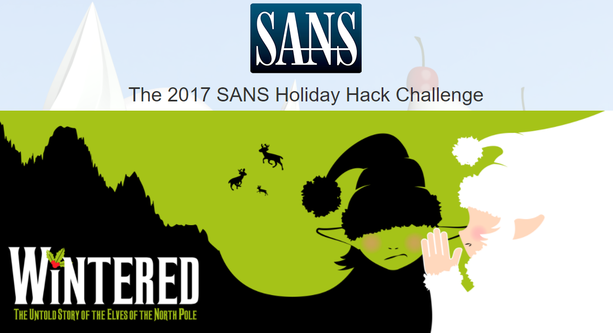
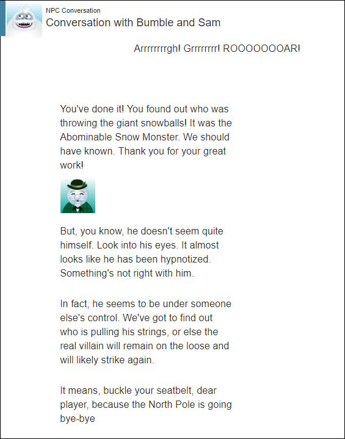
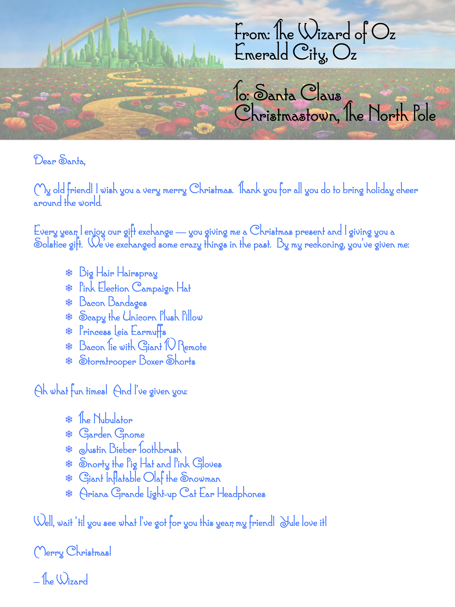

Introduction
A big thank you to Ed Skoudis, the folks at Counter Hack and SANS, and all of the other extremely talented people who lend their genius and creativity to keep this holiday tradition going!
This year's challenge was themed after Wicked, the musical inspired by L. Frank Baum's The Wizard of Oz. Familiar characters and tunes are found peppered throughout the challenge, and we learn that the North Pole Elves and the Munchkins of Oz share a common heritage. This was a highly entertaining as well as technical challenge.
If you haven't tried your hand at solving the Holiday Hack Challenge yet, I suggest visiting http://2017.holidayhackchallenge.com and giving it a go before reading all the spoilers. Anyone from beginner to advanced is bound to learn something, or at least have a little fun.
Answers
1) Visit the North Pole and Beyond at the Winter Wonder Landing Level to collect the first page of The Great Book using a giant snowball. What is the title of that page?
About This Book is page 1 of The Great Book.
2) Investigate the Letters to Santa application at https://l2s.northpolechristmastown.com. What is the topic of The Great Book page available in the web root of the server? What is Alabaster Snowball's password?
On the Topic of Flying Animals is page 2 of The Great Book, and the password is stream_unhappy_buy_loss.
3) The North Pole engineering team uses a Windows SMB server for sharing documentation and correspondence. Using your access to the Letters to Santa server, identify and enumerate the SMB file-sharing server. What is the file server share name?
The SMB server IP address is 10.142.0.7 and the share name is Filestor.
4) Elf Web Access (EWA) is the preferred mailer for North Pole elves, available internally at http://mail.northpolechristmastown.com. What can you learn from The Great Book page found in an e-mail on that server?
Rise of the Lollipop Guild is page 4 of The Great Book.
5) How many infractions are required to be marked as naughty on Santa's Naughty and Nice List? What are the names of at least six insider threat moles? Who is throwing the snowballs from the top of the North Pole Mountain and what is your proof?
Answering this question requires some data analysis. Santa's list of who's naughty and nice can be found on the SMB fileshare, however all of the detailed infraction data has been removed for GDPR compliance. Fortunately, the North Pole Police Department website contains a publicly accessible database of infractions, which we can use to de-anonymize the naughty and nice list. Using the combined data, along with a memo naming two confirmed moles, we can determine how many infractions are needed to make the naughty list, and identify other people on the list who have the same MO as the known munchkin moles.
-
A minimum of three infractions is needed in order to be marked naughty, however it doesn't appear to be automatic until you've reached 5 infractions. For 3 and 4 infractions, there is a mixture of naughty and nice based on other criteria.
Infraction count Naughty Nice 0 0 19 1 0 311 2 0 97 3 4 30 4 23 3 5 42 0 6 8 0 7 3 0 10 1 0 -
Suspected munchkin moles: Bini Aru, Kirsty Evans, Nina Fitzgerald, Beverly Khalil, Sheri Lewis, Wesley Morton, Boq Questrian.
-
A document on the SMB server provided Bini Aru and Boq Questrian as confirmed munchkin moles, and listed their behaviors: aggravated pulling of hair, giving super atomic wedgies, and throwing rocks at people.
-
The infractions data shows that Bini was accused of both pulling hair and giving wedgies, and Boq was accused of both throwing rocks and giving wedgies.
-
The remaining suspects were found from analyzing the infractions data for individuals who were engaged in at least two of the three behaviors.
-
Note
See the discussion about the North Pole Police Department on the Servers page for the data analysis methods.
- Abominable Snowman was throwing the snowballs. This information is provided in the first NPC chat.

6) The North Pole engineering team has introduced an Elf as a Service (EaaS) platform to optimize resource allocation for mission-critical Christmas engineering projects at http://eaas.northpolechristmastown.com. Visit the system and retrieve instructions for accessing The Great Book page from C:\greatbook.txt. Then retrieve The Great Book PDF file by following those directions. What is the title of The Great Book page?
The Dreaded Inter-Dimensional Tornadoes is page 6 of The Great Book.
7) Like any other complex SCADA systems, the North Pole uses Elf-Machine Interfaces (EMI) to monitor and control critical infrastructure assets. These systems serve many uses, including email access and web browsing. Gain access to the EMI server through the use of a phishing attack with your access to the EWA server. Retrieve The Great Book page from C:\GreatBookPage7.pdf. What does The Great Book page describe?
Regarding the Witches of Oz is page 7 of The Great Book.
8) Fetch the letter to Santa from the North Pole Elf Database at http://edb.northpolechristmastown.com. Who wrote the letter?
The Wizard of Oz wrote the letter to Santa

9) Which character is ultimately the villain causing the giant snowball problem. What is the villain's motive?
Glinda the Good Witch is the villain. She wanted to spark a war between the Munchkins and Elves so that she could sell her spells to both sides for profit.